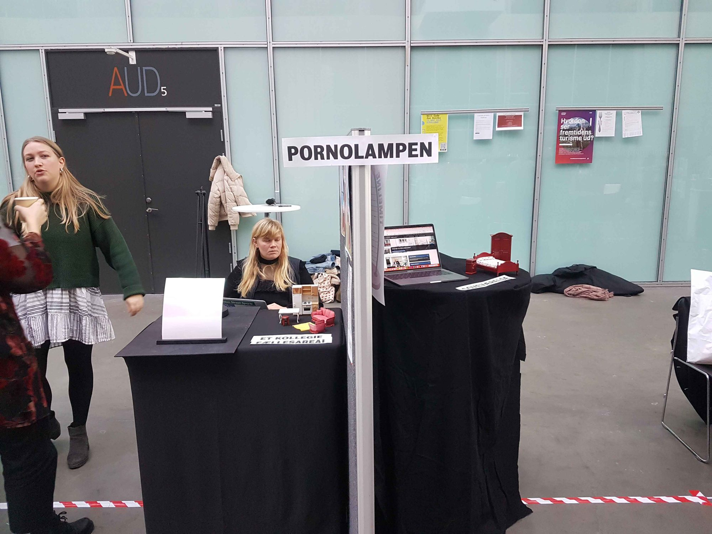
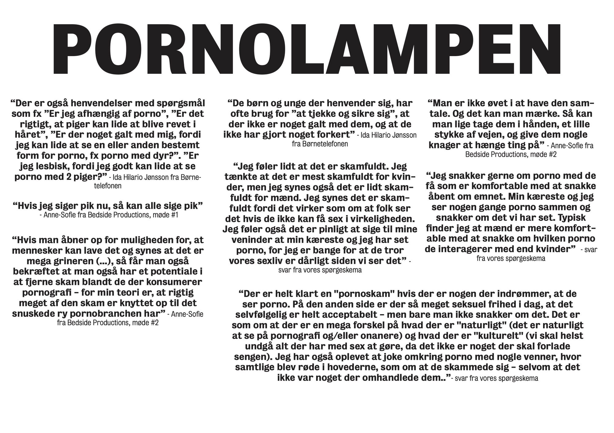
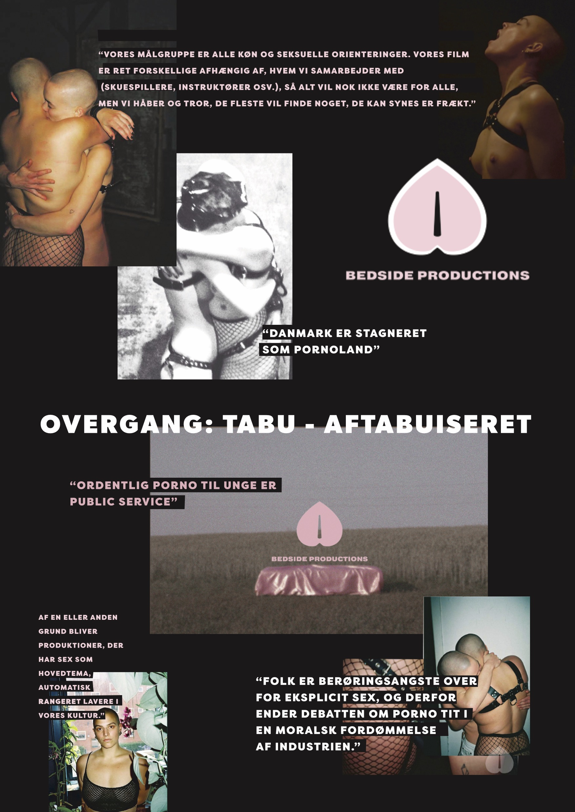
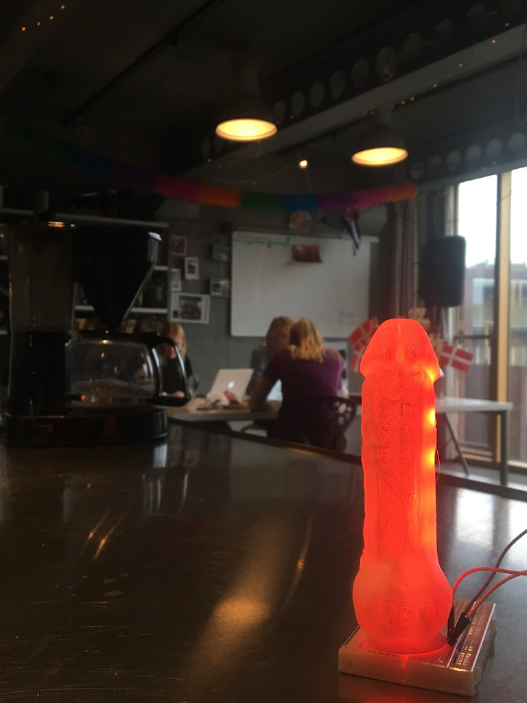
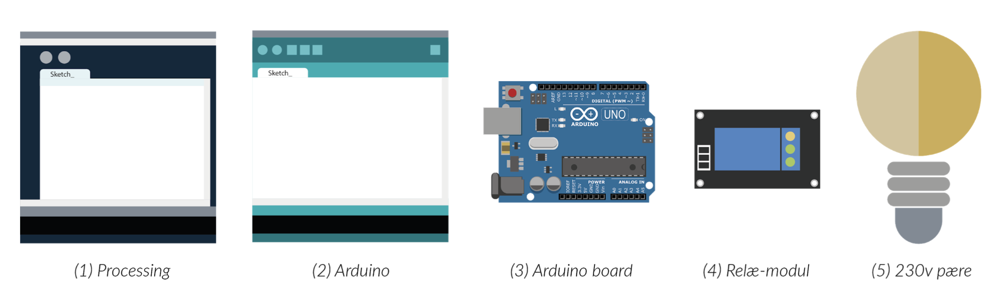
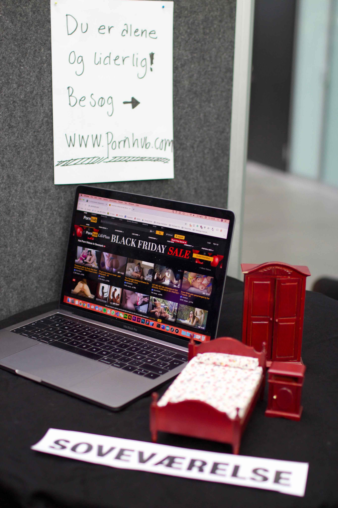
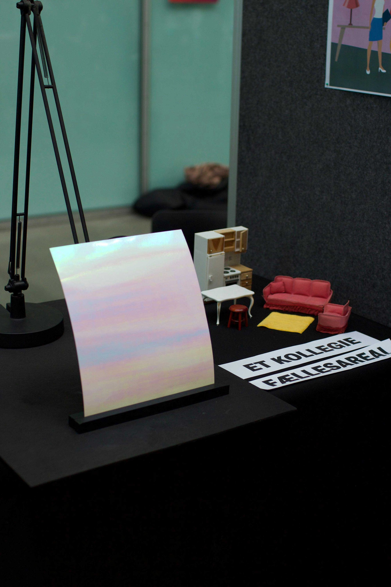
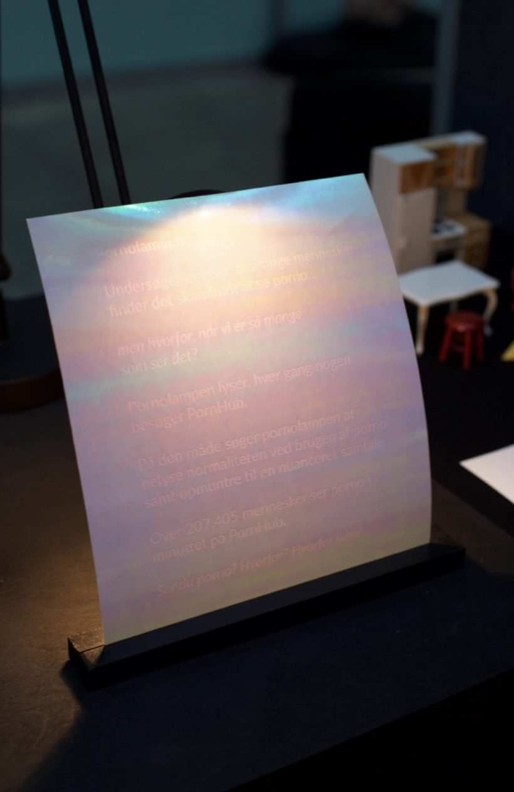
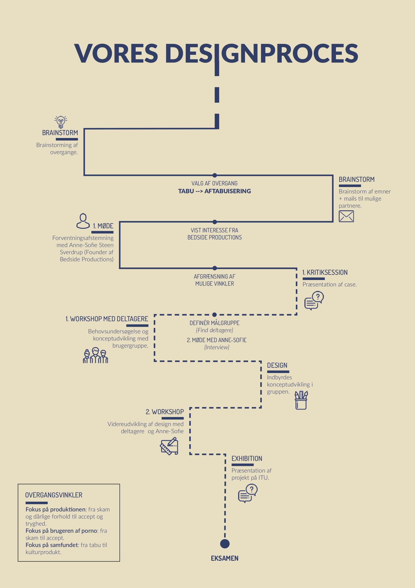
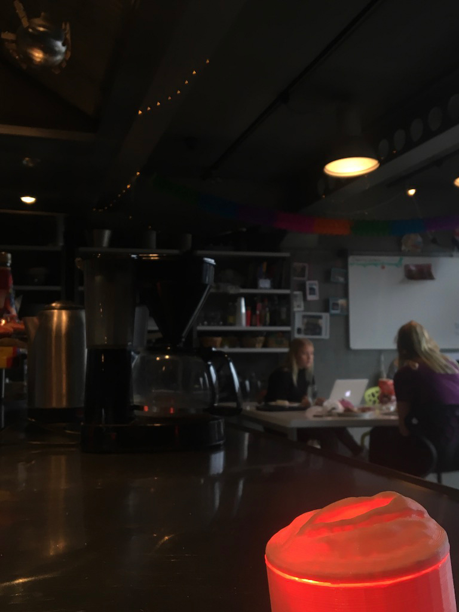

Pornolampen skal placeres i et fælles areal på et kollegie. Det kunne være et fælles køkken eller en fælles dagligstue. Dette valg er taget, da vi ønsker at placere pornolampen i en kontekst, hvor der er en form for fællesskab, samtidigt med at individerne stadig har deres eget private rum, hvor de ikke skal gå på kompromis med deres personlige sfære. Når en beboer på kollegiet ser porno, vil pornolampen, som står i et fælles areal, lyse op. Det vil altså være synligt for de øvrige beboere, som opholder sig i fælles arealet, at der er nogen som ser porno, men ikke hvem som ser det.


En tiltænkt brugskontekst kunne se ud som følgende: Kollegiebeboer nr. 1, sidder med sin computer på sit værelse. To andre beboere, står og snakker i deres fællesareal på kollegiet. Når beboer nr. 1 går ind på en pornoside, vil en lampe, placeret i fællesarealet, lyse op. De to andre beboere ser dette og begynder efterfølgende at diskutere porno sammen. De andre beboere er indforstået med lampens betydning, og derved kan det potentielt fremme en samtale. Ambitionen med pornolampen er først og fremmest at bidrage til at aftabuisere brugen af porno, ved at skabe et design, som kan fungere som dialogstarter.

Processing programmet (1) har til opgave at holde øje med, hvornår computeren besøger Pornhub. Når den gør, sender den et 1-tal og når den ikke gør, sender den et 2-tal videre til Arduino (2). Arduino-koden står for at sende information videre til Arduino-boardet (3). Hvis Arduinoen modtager et 2-tal skal lampen (5) forblive slukket, men hvis den modtager et 1-tal, skal lampen tændes. Denne information modtager Arduinoen, som så står for enten at tænde eller slukke lampen. Arduino-boardet kan kun håndtere 5 volt, men eftersom at vores pære bruger 230 volt, har vi et relæ-modul (4) imellem vores Arduino-board og vores pære, som sørger for, at Arduino-boardet kan håndtere de 230 volt, som kommer ud af stikkontakten og som vores pære bruger.


Pornolampen [2019]
Vi har designet Pornolampen - en interaktiv, penis og vagina-formet lampe, som tænder hver gang en beboer på kollegiets Wi-Fi besøger en porno-hjemmeside. Pornolampen skal placeres i et af kollegiets fællesarealer - dette kan være et fælleskøkken eller en fælles opholdsstue. Hver gang en beboer på kollegiet ser porno på sit værelse, vil lampen lyse op i fællesarealet. Pornolampen vil altså ikke afsløre præcis hvem som ser porno, men vil gøre de resterende beboere på kollegiet, der opholder sig på fællesarealet, opmærksom på, at der er nogen som ser det netop nu.


Design manifesto:

Koden bag Pornolampen er skrevet i Arduino og Processing. Programmet måler, hvornår brugerens computer besøger Pornhub. Hver gang dette sker, sender programmet et signal videre til lampen om, at den skal tænde. Når brugeren forlader porno- hjemmesiden vil lampen slukke. Pornolampen vil altså kun være tændt så længe en beboer er inde på siden.

“Hvis man kan få folk til at gå med til det (...) så tror jeg helt sikker at den ville skabe noget dialog. Bare det at skulle diskutere om den skal stilles op, er en dialog omkring det. (...) Spørgsmålet er bare om folk ville gå med til det, eller om de ville synes at det var for krænkende”(jf. Bilag 7 - Tietgen Kollegiet, 10.20).